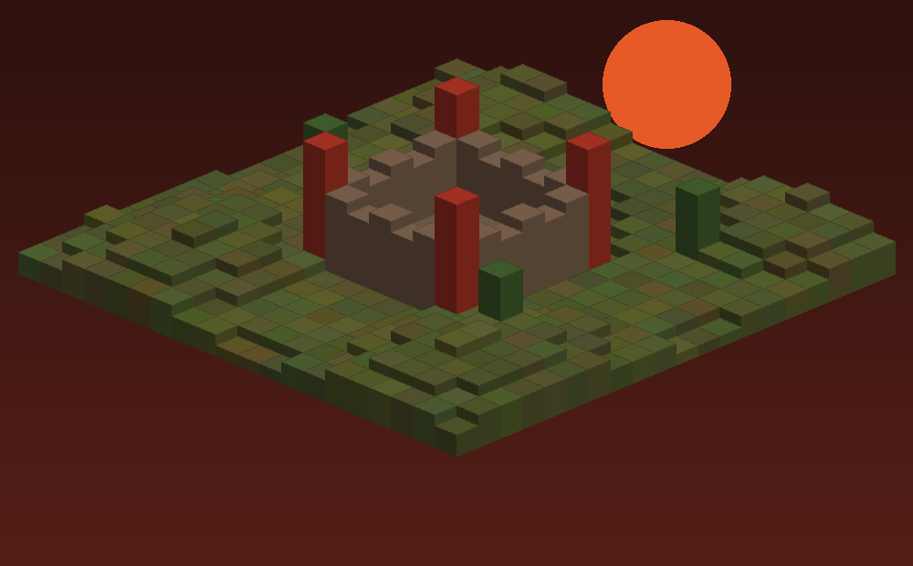

Новое приключение начинается с простой идеи. Кто-то хочет построить уютный дом, кто-то — найти красивое место для крепости, а кто-то собирается исследовать мир вместе с друзьями.
Первые шаги
Выбери понятную цель. Собери материалы для первого дома, продумай безопасный маршрут и найди место, в которое захочется вернуться. Небольшие задачи помогают увидеть свой прогресс.
Новое приключение начинается с простой идеи. Кто-то хочет построить уютный дом, кто-то — найти красивое место для крепости, а кто-то собирается исследовать мир вместе с друзьями.
Играть вместе интереснее
Обсудите, что хотите построить, распределите задачи и договоритесь, где хранить общие ресурсы. Хорошая команда начинается с понятных договоренностей и уважения друг к другу.

Перед началом
Ознакомься с правилами проекта. Они объясняют, как взаимодействовать с другими участниками и что учитывать при совместной игре.
Читать